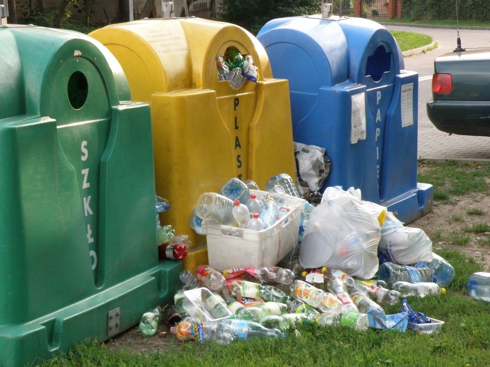

Znaczenie recyklingu
W morzach znajduje się już 150 mln ton plastiku – czasem łatwiej trafić tam na butelkę niż na ławicę
ryb. Na wodzie poza planktonem unosi się też mikroplastik. Pochłaniają go ryby, które później trafiają
na nasze stoły. Osadza się on też w glebach. Nie sądzisz, że już czas na zmiany?
Najprostsza definicja recyklingu określa go jako ponowne wykorzystanie surowców i materiałów, a
więc ich powrót do ponownego obiegu.
Do przedmiotów, które podlegają recyklingowi, zaliczają się:
- papierowe gazety, opakowania oraz papier biurowy,
- wyroby z tworzyw sztucznych: butelki PET, opakowania, pojemniki itp.,
- szklane słoiki, butelki, szkło opakowaniowe,
- opakowania produkowane z różnych tworzyw (tzw. wielomateriałowe),
- worki i torby foliowe, folie opakowaniowe,
- odpady biodegradowalne: liście, skoszone trawy,
- aluminiowe puszki, przewody, chłodnice,
- opakowania kartonowe.
Wiedza o tym, czy dany materiał podlega recyklingowi, czy też nie może zostać ponownie
przetworzony, znacznie ułatwia podejmowanie decyzji dotyczących tego, czy należy wrzucić go do
pojemnika na odpady segregowane, czy na zmieszane.
Do przedmiotów, które podlegają recyklingowi, zaliczają się:
- artykuły i akcesoria do codziennej higieny,
- zużyty sprzęt AGD, RTV, elektronika,
- szkło ceramiczne oraz żaroodporne,
- brudny papier, kalka lub tapeta,
- styropianowe lub plastikowe opakowania po jedzeniu,
- termometry, strzykawki i inne artykuły medyczne,
- wyroby z ceramiki, szklane lustra,
- papierowe kubeczki po napojach,
- papierowe kubeczki po napojach,
- znicze lub wkłady z pozostałością wosku.

Produkty które powstają dzięki recyklingowi:
Równie bogata jest gama wyrobów, które trafiają na rynek po przetworzeniu tworzyw
sztucznych takich jak PET oraz HDPE. Mowa tu m.in. o:
- foliach, opakowaniach i butelkach,
- długopisach, zabawkach,
- obuwiu oraz tkaninach syntetycznych,
- materiałach termoizolacyjnych, opałowych,
- profilach PVC, meblach ogrodowych,
- artykułach sportowych, wykończeniach samochodowych oraz wielu innych
produktach
© revive